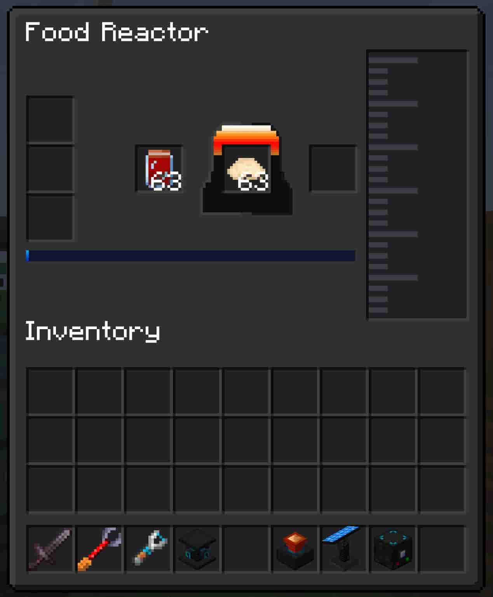
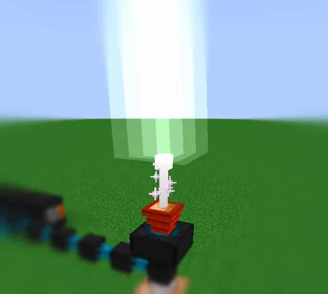
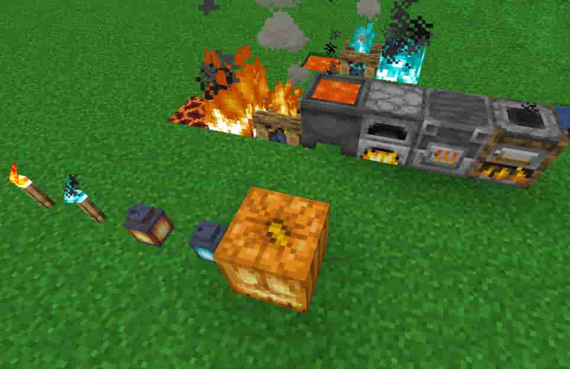
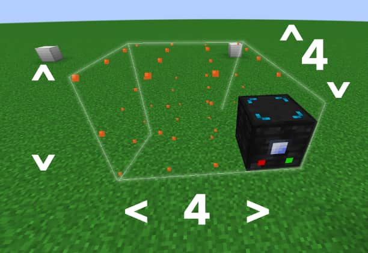

CMATD adds machines and powergen to your worlds! Some machinery requires daylight to operate, and some powergens require nighttime-only space rays to work properly. Each machine has a strength and weakness.
Machines have modules that can be installed in them to enhance them in some way, you aren't limited much in terms of customizing the machines to work the way you want them to.
There are tiers of machines as well. Upgrade tiers and machine type tiers. Upgrade tiers change the base abilities of machines they are installed in, as such, they can be considered modules.
On the other hand, machine type tiers are the machines themselves, but a different, more advanced version of the previous machine type. Powergens follow the machine type tier system, while lesser or otherwise beginner machines use upgrade tier modules to become enhanced.
This mod is still being worked on. Energy will need to be extracted and inserted explicitly by other mods' cables until the Conduits are working fully. The Conduits have facade support as well as energy somewhat working. Stay patient as this is worked on over time.





Image Coaster is hidden. (Javascript needs to be enabled!)